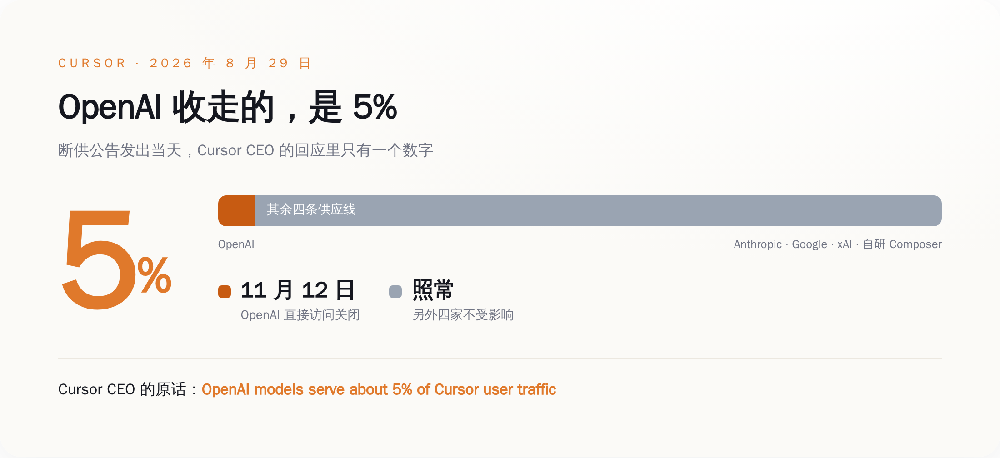
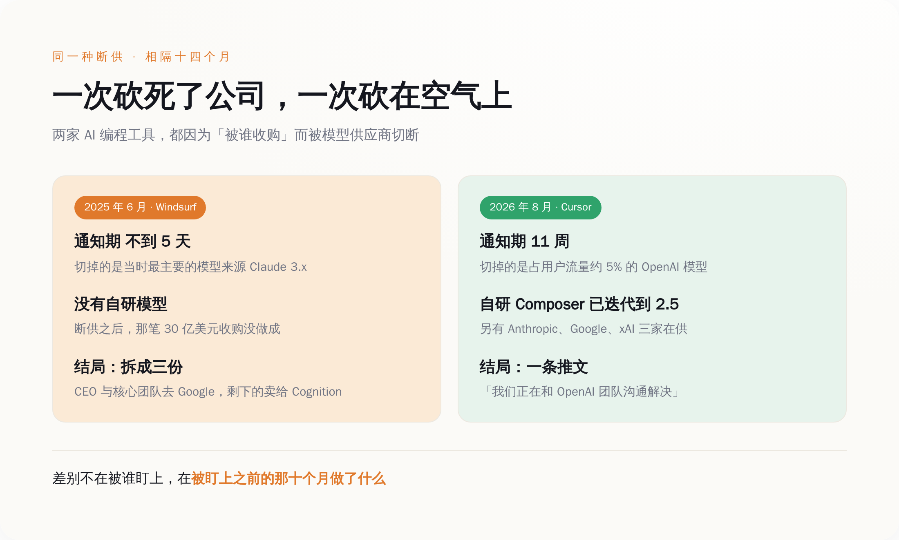
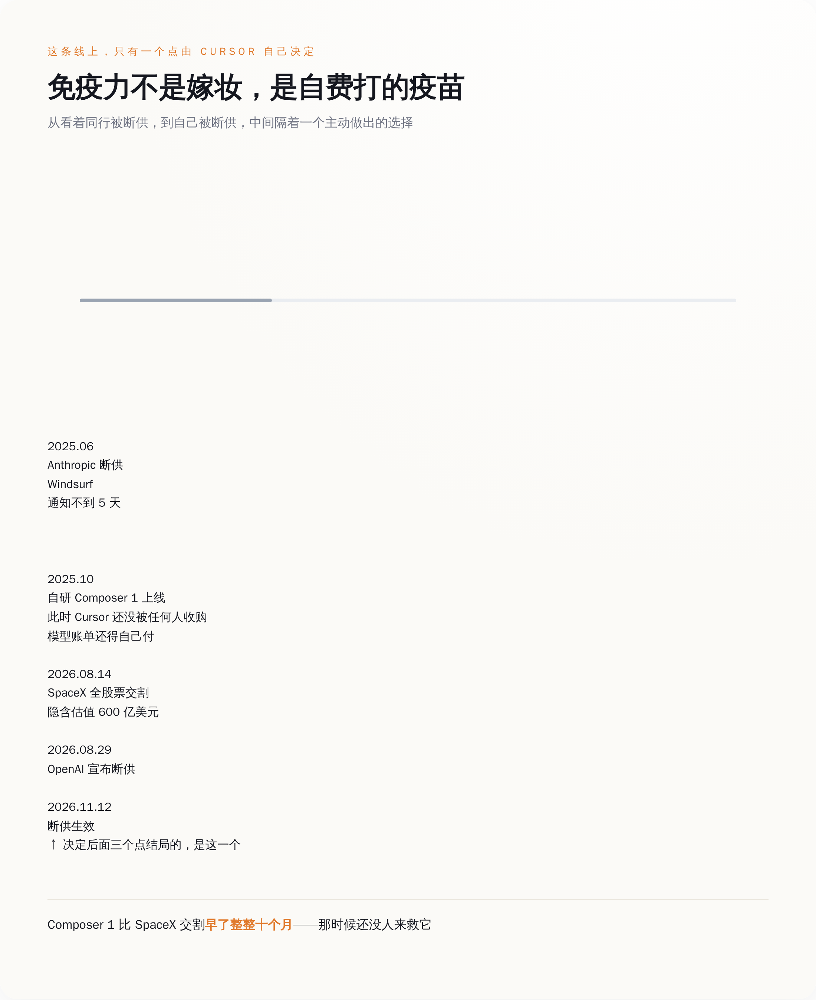

一、被掐脖子的那家，当天在算百分比
8 月 14 日，SpaceX 完成了对 Anysphere 的收购。Anysphere 是 Cursor 的母公司。全股票交易，Cursor 的普通股和优先股换成约 3.89 亿股 SpaceX A 类股，隐含估值 600 亿美元。这被称为有记录以来最贵的一笔创业公司收购。
十五天后，OpenAI 在自己的 X 账号上发了公告：
"We're ending our partnership with Cursor following its acquisition by SpaceX. Under our proposal, Cursor's direct access to our models would end on November 12."
配套的声明里，把理由讲得很直：
"We are making this choice because we cannot be confident that SpaceX will use our technology within our terms of service, based on our experience with Elon Musk's companies violating contracts."
一句话：你现在归马斯克了，马斯克的公司有违约前科，我不卖给你了。
Cursor 联合创始人兼 CEO Michael Truell 的回复很短：
"We're sorry to see that OpenAI put out a note saying they plan to block Cursor users from accessing OpenAI models in three months. OpenAI models serve about 5% of Cursor user traffic, and we're speaking with the OpenAI team to resolve this."
遗憾，三个月，5%，还在谈。四个信息点，就把这件事从"生死危机"降格成了"供应商变动通知"。
马斯克本人的反应更省事，X 上四个词："I couldn't care less."
同一个晚上，Anthropic 联合创始人兼首席运营官 Tom Brown 在 X 上发了这么一条：
"Cursor has been a trusted partner of Anthropic since Sonnet 3.5. We'll continue to increase compute to support Claude models in Cursor and are excited for what comes next with them at SpaceX."
同一桩收购，OpenAI 读出的是"不能信任"，Anthropic 读出的是"期待接下来在 SpaceX 的发展"。这两句话隔了不到二十四小时。
一家宣布断供，另一家宣布加供，被断的那家说你占我 5%。这个场面不太像掐脖子，更像有人在群里退了群，还发了条公告解释为什么退，而群里剩下的人正在讨论中午吃什么。

二、上一次这么断的时候，通知期不到五天
要理解 5% 这个数字有多贵，得回到 2025 年 6 月。
那年 5 月 6 日，彭博社报道 OpenAI 已就以约 30 亿美元收购 Windsurf 达成协议。那是当时最被看好的 AI 编程工具之一，也是 Cursor 最直接的对手。
不到一个月，Anthropic 动手了。6 月 3 日，Windsurf 的 CEO Varun Mohan 在 X 上写道：
"With less than five days of notice, Anthropic decided to cut off nearly all of our first-party capacity to all Claude 3.x models."
不到五天通知，砍掉几乎全部 Claude 3.x 的直供容量——不是限流，是把它从 Anthropic 的一手客户名单上划掉。Mohan 还说了一句更难受的：Windsurf 是愿意照单付钱的。钱不是问题，问题是它要被谁买。
Anthropic 联合创始人兼首席科学官 Jared Kaplan 后来在一场公开场合把话说得很坦白：
"It would be odd for us to be selling Claude to OpenAI."
把 Claude 卖给 OpenAI 用，那多奇怪啊。
这话没什么好反驳的。奇怪的是后面发生的事：Windsurf 被切断模型访问之后，那笔 30 亿美元的收购最终没做成。2025 年 7 月，Google 花约 24 亿美元把 Windsurf 的 CEO Varun Mohan、联合创始人 Douglas Chen 和核心团队整队挖走，走的是"许可 + 招人"的路子，不买公司。7 月 14 日，Cognition——做 Devin 那家——宣布收购 Windsurf 剩下的 IP、产品、商标和团队。
从被断供那天算起，一个半月，一家公司被拆成三份：人去了 Google，壳和产品去了 Cognition，原本的收购方 OpenAI 空手而归。
把两次并排放：Windsurf 那次，通知期不到五天，砍的是它最主要的模型来源，砍完公司没撑住；Cursor 这次，通知期十一周，砍的是占它 5% 流量的东西，被砍的人当天发推说我们再谈谈。
同样的动作，同一个行业，中间隔了十四个月。差别不在运气。

三、那 5% 是花十个月买回来的
Windsurf 出事的时候，Cursor 在场。
2025 年 10 月，Cursor 发布 2.0 版本，同时端出了 Composer 1——它自己训的编程模型。之后一路迭代，Composer 1.5、Composer 2、Composer 2.5 一版接一版地出，到今天，Cursor 的 Auto 模式经常直接把请求交给自研模型来跑。
Composer 1 发布是 2025 年 10 月，SpaceX 完成收购是 2026 年 8 月 14 日，中间隔了整整十个月。
也就是说，Cursor 把 OpenAI 从主力降到 5% 这件事，不是当上 SpaceX 子公司之后才有底气干的，是它自己在还没卖身、还得自己交模型账单的日子里，一行行代码干出来的。免疫力不是嫁妆，是自费打的疫苗。
动机也不神秘。Cursor 这类工具的商业模型有个公开的丑处：营收看着漂亮，钱大半流向模型商。社交媒体上流传过一份基于公开信息的测算，说 Cursor 在截至 2026 年 1 月的那个季度毛利率是负的——每收进 1 美元，要付出去 1.2 美元出头的 API 成本。这个数字来自第三方推算而非财报，谁也没法拿它当铁证，但方向上跟多家媒体的定性报道是一致的：Cursor 长期被上游成本压着，自研模型是它给自己止的血。
到 2026 年 8 月，Cursor 的模型菜单上摆着五家：OpenAI、Anthropic、Google、xAI 的 Grok，以及自家的 Composer。OpenAI 是这五个里最能被拿掉的那个。
所以 OpenAI 这一刀砍下去的时候，砍到的是它自己十个月前就已经被挪开的位置。